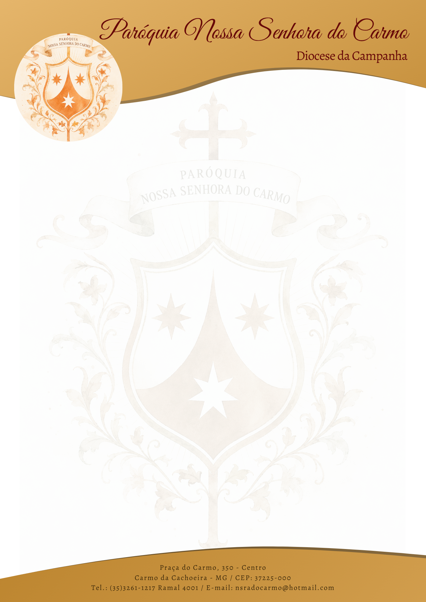

Declaração de Batismo
Preencha os dados para gerar o documento oficial
Livro nº
Folha nº
Registro nº
Nome do Batizado
Data de Nascimento
Naturalidade
Nome do Pai e da Mãe
Nome dos Padrinhos
Data do Batismo
Ministro (Padre / Diácono)
Data de Emissão do Documento
Gerar Documento PDF no Papel Timbrado